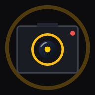

Izinkan akses kamera pada browser agar Anda dapat memotret Foto-Live & merekam video secara nyata.
LIVE
✓ Tersimpan di Galeri
3
LIVE
1 / 1
Baru saja
👆 Sentuh & tahan foto untuk memutar gerak Live

Kamera Foto-Live Pro
Aplikasi Kamera Layar Penuh • Otomatis Simpan Galeri
Instal aplikasi kamera ini ke layar utama HP Anda agar dapat dibuka langsung layar penuh seperti kamera bawaan HP!
1
Android (Chrome / Xiaomi / Poco / Samsung):
Ketuk tombol "Instal Aplikasi Sekarang", atau ketuk ikon titik tiga (⋮) di pojok kanan atas browser lalu pilih "Instal aplikasi" (Install app) atau "Tambahkan ke Layar Utama".
2
iPhone / iPad (Safari):
Ketuk tombol Bagikan (Share ⬆️) di bagian bawah Safari, lalu pilih "Tambah ke Layar Utama" (Add to Home Screen).